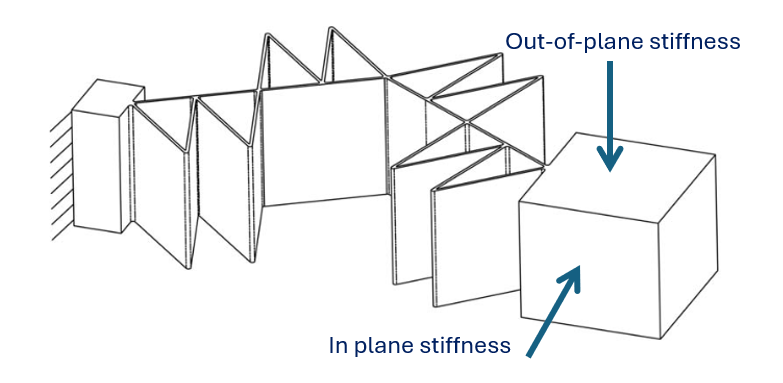

PROJECT IMAGE / CAD RENDER
PROJECTS
Selected engineering work.
This overview contains both projects at the TU Delft as well as personal projects.

Investigating Spline and Triangular Reinforced Flexures
This project investigates the impact of different geometric shapes on the stiffness behaviour of compliant mechanisms. The goal is to improve the Range of Motion and keep the out-of-plane stiffness the same.
Problem
A downside of compliant mechanisms is their limited Range of Motion. The movement is blocked by the structure itself, as compliant mechanisms do not use conventional joints. At the same time, compliant mechanisms need to be sufficiently stiff in some planes. Consider the out-of-plane stiffness of a wafer handler: Buckling in this plane may result in the decrease of accuracy, which is highly unwanted.
Solution
We investigated a mechanism with triangular reinforced structures. We aimed to increase the Range of Motion and hypothesized that replacing triangular reinforcement structures with spline structures may increase the Range of Motion. We optimized the amount of spline replacement structures needed and the dimensions with a topology optimization in SolidWorks. We then validated the results experimentally.
Ultimately, we validated that this design increases the Range of Motion by 6% while decreasing the out-of-plane stiffness 22%. So, these results make this design suitable for large Range of Motion applications where less out-of-plane stiffness is required.
Gained Engineering Insight
The main insight I gained for this project was understanding the stiffness trade-offs of compliant mechanisms. Replacing stiff structures with soft structures impacts the stiffness in multiple planes. So, we really developed an intuition for the impact certain geometric changes have on the mechanism. Eventually, we reached an acceptable trade-off during the optimization. We also had the opportunity to 3D-print the same mechanism with many different shapes and dimensions. This gave us an understanding of compliant mechanisms that no theory could give us. In addition, I gained experience with FEM simulations and design optimization which has made me more confident to approach new problems.
I also discovered that I really enjoy designing compliant mechanisms through this project.
OPTIONAL VIDEO / IMAGE / CAD
05
Project page structure
Problem
[What had to be solved?]
Approach
[Concepts, design decisions, calculations, simulations.]
Design
[CAD, drawings, mechanism, materials, manufacturing.]
Validation
[Testing, measurements, results and comparison to requirements.]